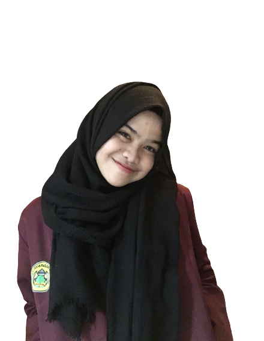

Latar Belakang
Pendahuluan
Benda-benda seperti mistar, arloji, stopwatch, timbangan, thermometer merupakan benda-benda yang banyak digunakan di dalam pengukuran. Benda-benda tersebut dapat memudahkan manusia dalam kegiatan pengukuran. Pengukuran sering kali digunakan di dalam kehidupan sehari-hari.
Idealnya, semua kalangan harus memahami pengertian pengukuran yang sebenarnya dan mengaplikasikan secara tepat di kehidupan sehari-hari. Pengukuran juga banyak diterapkan dalam dunia sains dan teknik. Tanpa sistem dan metode pengukuran, dunia sains dan teknik tidak akan mengalami kemajuan. Diharapkan, pengukuran dapat digunakan semua orang secara tepat baik dari perhitungan sederhana maupun perhitungan transaksi ekonomi dalam jutaan waktu.

Pengukuran
Materi
A. Mengenal Waktu
1. Menentukan Waktu, Hari, Bulan, dan Jam
a. Waktu
1) Lama atau Sebentar
Apakah waktu itu? Waktu adalah lamanya suatu hal berlangsung atau kapan suatu hal terjadi.

Andin : “Dari rumah ke minimarket aku membutuhkan waktu cukup lama loh.”
Nita : “Kalau aku hanya sebentar.”
Dari percakapan Andin dan Nita saat menuju minimarket Andin membutuhkan waktu lama dan Nita membutuhkan waktu sebentar. Lama berarti waktu yang dibutuhkan banyak, sedangkan sebentar berarti waktu yang dibutuhkan sedikit.
2) Pagi, Siang, dan Malam

Waktu setelah matahari terbit disebut pagi.
Waktu saat matahari bersinar terang disebut siang.

Waktu setelah matahari terbenam disebut malam. Di saat malam hari bumi diterangi oleh sinar bulan.
2. Hubungan Satuan Waktu
Satuan waktu yang dapat digunakan untuk mengukur lama suatu kejadian berlangsung antara lain: jam, menit, dan detik. Hubungan ketiga satuan waktu tersebut adalah sebagai berikut:
Contoh:
1. 5 jam = 5 x 60 menit = 300 menit
2. 2 jam + 25 menit = 120 menit + 25 menit = 145 menit
3. 75 menit – 1 jam = 75 menit – 60 menit = 15 menit
3. Menentukan Lama Suatu Kegiatan
Lama suatu kegiatan dapat ditentukan dengan mengurangi waktu selesai dengan waktu dimulainya kegiatan tersebut. Lama suatu kegiatan dapat dinyatakan dalam satuan waktu seperti jam, menit, atau satuan waktu lainnya. Contohnya sebagai berikut:
Nenek mulai memasak pada pukul 08.30. Nenek selesai memasak pada pukul 09.05. Berapa lama Nenek memasak?
Penyelesaian:
Lama memasak = 30 menit + 5 menit = 35 menit. Jadi, lama Nenek memasak adalah 35 menit
B. Mengukur Panjang
1. Membandingkan Panjang Benda Secara Langsung
Benda-benda yang dibandingkan panjangnya diletakkan berdampingan.
Perhatikan contoh dalam gambar berikut.

Gunting lebih pendek daripada pisau. Pisau lebih panjang daripada gunting.
2. Pengukuran Panjang dengan Satuan Baku
Ada beberapa jenis alat ukur panjang baku yang dapat digunakan untuk mengukur panjang suatu benda. Setiap alat ukur tersebut digunakan sesuai benda yang diukur.

Penggaris digunakan untuk mengukur panjang garis atau benda-benda lain yang panjangnya kurang dari 1 meter.

Meteran pita digunakan oleh penjahit untuk mengukur panjang kain yang akan dijadikan pakaian.

Meteran rol kecil digunakan oleh tukang kayu untuk mengukur panjang kayu atau ruangan. Meteran rol kecil ini dapat digunakan untuk mengukur panjang benda hingga 10 meter.
Perhatikan gambar tangga satuan panjang di bawah ini!

Contoh:
1. 5 km = 5 x 1.000 m = 3.000 m
2. 2 km + 275 m = (2 x 1.000 m) + 275 m = 2.000 m + 275 m = 2.275 m
3. 2 m = 2 x 100 cm = 200 cm
4. 1.450 m = 1.000 m + 450 m = 1 km + 450 m
C. Mengukur Berat
1. Pengukuran Berat Benda dengan Satuan Baku
Untuk menentukan berat suatu benda dengan satuan baku dapat digunakan alat yang disebut timbangan. Ada berbagai jenis timbangan sesuai dengan kegunaannya masing-masing.

Timbangan berat badan, biasa digunakan untuk menimbang berat badan anak-anak hingga dewasa.

Timbangan neraca, biasa digunakan untuk menimbang perhiasan.

Timbangan rumah tangga, biasa digunakan untuk keperluan rumah tangga, seperti menimbang bahan-bahan kue.

Timbangan digital, biasa digunakan di swalayan untuk menimbang buah, daging, sayur, dan sebagainya.
Perhatikan tangga satuan berat di bawah ini!

Contoh:
1. 1 kg = 10 hg (ons) = 1.000 gram
2. 4 ons = 400 gram
3. 3.175 gram = 3.000 gram + 175 gram = 3 kilogram + 175 gram
4. 2 kg + 305 g = 2 x 1.000 g + 305 g = 2.000 g + 305 g = 2.305 g
Latihan
A. Kerjakan dengan Benar
1. Putri selesai mandi pagi. Saat itu jarum panjang jam menunjuk angka 12. Sedangkan jarum pendek jam menunjuk angka 7. Saat itu pukul ____________
2. Ada 2 ember di halaman belakang rumah yang ukurannya sama besar. Ember merah berisi air setengahnya. Ember biru berisi air penuh. Ember merah _______________ daripada ember biru.
B. Jawablah Soal-Soal Berikut dengan Tepat
1. Amad pulang dari sekolah. Saat itu jarum panjang jam menunjuk angka 6. Jarum pendek jam menunjuk antara angka 3 dan 4. Pukul berapa amad pulang dari sekolah?
2. Perhatikan gambar di bawah ini. Mana yang lebih berat, buah anggur atau buah apel?

3. Di atas kursi ada dua kardus sama besar. Kardus hitam berisi tisu. Kardus pink berisi balok kayu. Kardus mana yang lebih berat?
Profil
Amanda Putri Maulidya merupakan seorang mahasiswi yang lahir di Serang pada tanggal 25 Mei 2004. Saat ini ia berumur 18 tahun dan sedang mengampu semester 2 di jurusan Pendidikan Matematika, Fakultas Keguruan dan Ilmu Pendidikan, Universitas Sultan Ageng Tirtayasa. Kesukaan ia adalah menonton film dan berenang.
Web ini merupakan web pertama yang ia buat sebagai salah satu sumber belajar materi pengukuran untuk memenuhi tugas Ujian Akhir pada mata kuliah Pengembangan Multimedia Matematika.
Partner
Jl. Ciwaru Raya, Cipare, Kec. Serang, Kota Serang, Banten 42117